|
|
| sea anemones text index | photo index |
| Phylum Cnidaria > Class Anthozoa > Order Actiniaria > Genus Stichodactyla |
| Haddon's
carpet anemone Stichodactyla haddoni Family Stichodactylidae updated Dec 2024
Where seen? This enormous anemone bigger than your face is commonly seen on many of shores. In sandy areas, among seagrasses and also on coral rubble. Features: Diameter 40-50cm when fully expanded, but is said to reach up to 75-80cm. The large oral disk is densely covered with short tentacles so that it resembles a short-pile carpet. Tentacles short, stubby and may have bulbous tips, sometimes resembling beads. Tentacles are sticky. The outer edge of the oral disk is fringed with tentacles that are twice as long (exocoelic tentacles), alternating with short ones (endocoelic tentacles). The long body column is usually buried and ends in a pedal disk that anchors the animal. Small bumps (verrucae) on the body column are non-adhesive, small and not visible as they are usually the same colour as the body colum. |
|
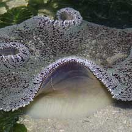 Chek Jawa, Jun 05 |
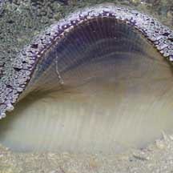 Verrucae invisible. |
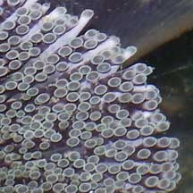 Distinctive alternating 'long' and 'short' tentacles at the circumference. |
| Colourful Carpets: Carpet anemones of the same species
may have very different colours, some may even appear striped. Colours seen include
deep purple, a fresh green to muted pastel blue, green and grey. Andy
Dinesh took a video clip of these anemones
flourescing under UV (ultaviolet) light! Sometimes mistaken for other carpet anemones and other large anemones. Here's more on how to tell apart the different kinds of carpet anemones and large sea anemones with long tentacles and large 'hairy' cnidarians. |
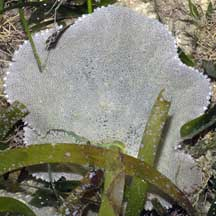 Cyrene, Mar 07 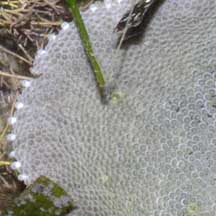 |
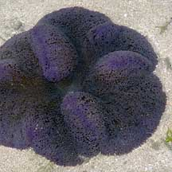 Pulau Sekudu, Feb 07 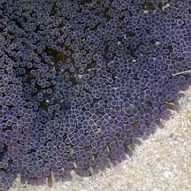 |
 Chek Jawa, Jun 05 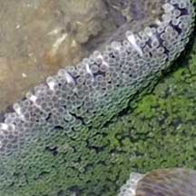 |
| Stinging carpet! Like other
anemones, the carpet anemone has stingers in its tentacles. Generally,
these stings do not hurt human beings, but they can leave welts on
sensitive skin. Carpet food: Carpet anemones harbour symbiotic single-celled algae (called zooxanthellae). The algae undergo photosynthesis to produce food from sunlight. The food produced is shared with the anemone, which in return provides the algae with shelter and minerals. The zooxanthellae are believed to give the tentacles their brown or greenish tinge. Carpet anemones may also feed on fine particles that are trapped on their bodies. The anemones have also been seen swallowing various animals. The sticky tentacles grab any that blunder or are washed into them. The oral disk can contract quickly to hold on to the luckless prey, which is eventually transferred into the central mouth. Some large creatures that are swallowed up by carpet anemones include fishes and crabs. More photos of what our carpet anemones have been seen swallowing. Haddoni friends: Besides the symbiotic algae that lives inside the their tentacles several kinds of animals have been recorded elsewhere as being associated with Haddon's carpet anemones. These include anemone shrimps (Periclimenes sp.), and fishes such as Dascyllus trimaculatus and anemonefishes (Amphiprion sp.) including A. akindynos, A. clarkii, A. fuscocaudatus, A. polymnus, A. sebae, A. xanthurus. But so far, the only animals seen living on our Haddon's carpet anemones are the tiny carpet anemoneshrimp (Periclimenes sp.), Peacock-tail anemone shrimp (Periclimenes brevicarpalis). Other animals have been observed taking shelter under these anemones, such as crabs and snapping shrimps. Ball sea cucumbers are often found buried near carpet anemones. Also seen were Kite butterflyfish (Parachaetodon ocellatus) and Chequered cardinalfish (Apogon margaritophorus) swimming near, but not touching, carpet anemones. Sometimes small groups of small Kite butterflyfishes are seen near carpet anemones. |
 Capturing small fishes by folding the oral disk over the prey. Chek Jawa, Feb 02 |
 Peacock-tail anemone shrimps are often found in these anemones. Kusu Island, Jul 04 |

| Should I 'save' animals trapped in a carpet
anemone? If you do, you will be depriving the anemone of
a meal. It might not get so lucky again for a while. The animal that
you 'saved' might also not survive if it was badly stung by the carpet
anemone. Should I feed the anemones? Please don't. Carpet anemones know how to feed themselves. You might hurt the anemone if you put the wrong thing on it. If you put another living animal on an anemone you will be hurting two animals. Please don't put objects such as litter or dead crabs on a carpet anemone either. |
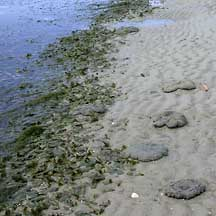 Some carpet anemones out on the hot dry sand bar at low tide. Chek Jawa, Feb 02 |
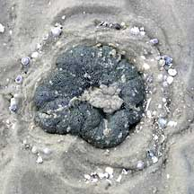 They can survive out of water for a short time by shrinking their oral disk. Chek Jawa, Feb 02 |
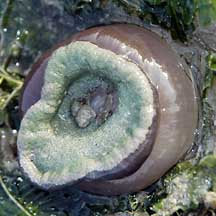 They can also tuck the oral disk into the body column. Chek Jawa, May 03 |
| Carpet of Death: On Chek Jawa,
you might notice that there are many carpet anemones on the hot, dry
sand bar at low tide. Why are they there when they could be in the
cool pools instead? On Chek Jawa, the sand bar is the first to emerge
at low tide and the last to submerge as the tide comes in. As fishes
and other animals enter the lagoon with the incoming tide, or leave
with the outgoing tide, they have to negotiate this minefield of anemones.
Some unlucky creatures might blunder into a Carpet anemone. Carpet
anemones on the sand bar may thus have a better chance of a meal. High and dry: Carpet anemones can survive for a short while out of water. To conserve water, the oral disk shrinks to reduce the surface area and mucus is secreted to cover the mouth and delicate body parts. Sediment gets stuck to this mucus, probably providing some shade from the sun. Smaller anemones may also tuck the oral disk into the body column at low tide. When the tide comes back, the oral disk furls to the full size. |
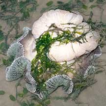 An uprooted and upside down anemone which is otherwise healthy. Chek Jawa, Nov 06 |
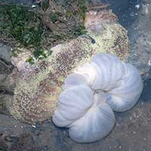 Bleaching and ballooning due to prolonged extreme fall in salinity. Chek Jawa, Jan 07 |
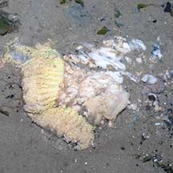 Bleaching and exploded anemone due to prolonged extreme fall in salinity. Chek Jawa, Jan 07 |
Can carpet anemones move? Carpet
anemones probably usually stay in one spot. However, they can uproot
themselves and move to a new place. This is probably how they avoid
being buried as the sand bar shifts. If you find an 'uprooted' carpet
anemone, you may place it in a pool of water. There is no need to
're-plant' it. |
| Haddon's carpet anemones on Singapore shores |
On wildsingapore
flickr
|
| Other sightings on Singapore shores |
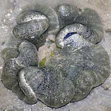 Pulau Pawai, Dec 09 |
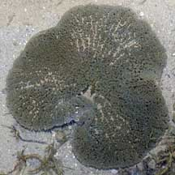 Pulau Pawai, Dec 09 |
| haddon's carpet anemone @ sekudu - Oct2011 from SgBeachBum on Vimeo. |
Links
References
|